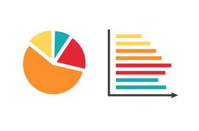

Redactado jueves 7 de enero de 2021
 UNIVERSIDAD MODULAR ABIERTA
picture_as_pdf
DESCARGAR PDF
UNIVERSIDAD MODULAR ABIERTA
picture_as_pdf
DESCARGAR PDF
Introducción
El término Industria 4.0 se refiere a un nuevo modelo de organización
y de control de la cadena de valor a través del ciclo de vida del producto
y a lo largo de los sistemas de fabricación apoyado y hecho posible por las
tecnologías de la información.
Según José Luis del Val Román de la Universidad de Deusto de la Ciudad de Bilbao España.
Se entiende como la colección de tecnologías que usan como eje central la inteligencia artificial, Cloud Computing, grandes volúmenes de datos (Big Data) entre otros..
El objetivo principal de esta propuesta de consultoria es el de volver competitivas a las empresas brindando acceso a las nuevas herramientas tecnologías, iniciando así la integración a la industria 4.0 a través de uno de los ejes principales de toda empresa, servicios de publicidad y formas de llegar a clientes, a través del manejo de las notificaciones HUB.
Nuestro enfoque es apoyar a las PYMES en cuanto a la eficiencia operacional y reducción de costos de la empresa, mediante el desarrollo de un nuevo modelo de negocio apoyado por las nuevas tecnologías.
La estrategia de las PYMES debe estar orientada a potenciar el uso de los canales electrónicos, logrando ser más eficientes para en el manejo de las notificaciones. Un servicio de notificaciones HUB mejora la capacidad y calidad de publicidad de las PYMES, permitiendo una comunicación efectiva con sus clientes nuevos y potenciales.
-
¿Qué ventajas posee Notificaciones HUB sobre viejos paradigmas?
Ahorra el costo de mano de obra necesario para actividades publicitarias, con un sistema inteligente, automatizado e independiente de un operador, el cual solo necesita instrucciones simples para funcionar. Elimina la necesidad de hacerse notar a través de volantes o cupones, y se comunica directamente con el cliente a través del teléfono móvil. Dicha comunicación es continua y permanente con el cliente el cual recibirá notificaciones periódicamente. -
¿Qué riesgos hay de no adoptar nuevos paradigmas?
La falta de los recursos económicos, y ahora con las condiciones actuales de pandemia por el COVID-19 a nivel mundial, es necesario diversificarse más que nunca y superar los problemas que acogen a las PYMES. El poder alcanzar clientes es una necesidad fundamental de toda empresa de comercio; el no hacerlo significa renunciar a su única fuente de ingresos y solo le esperaría el agote de capital y cierre de actividades
En esta pagina aprendera acerca de:
1. ¿Qué son Notificaciones HUB de AZURE?

ANALISIS Y TABULACION:
2. ¿Qué tan extendido es el uso de tecnologias 4.0 en El Salvador?

1. ¿Qué son Notificaciones HUB de AZURE?
Microsoft Azure Portal es una consola unificada basada en web que proporciona una alternativa a las herramientas de línea de comandos. Con Azure Portal, puede administrar la suscripción con Microsoft Azure mediante una interfaz gráfica de usuario. Puede compilar, administrar y supervisar todo, desde aplicaciones web sencillas hasta complejas implementaciones en la nube. Se pueden crear paneles personalizados para vistas organizadas de recursos.
El Portal Microsoft Azure proporcionar alta disponibilidad continua que tiene una presencia en cada centro de datos de Azure, y evita que la red se vuelva lenta. Azure Portal no deja de actualizarse y no requiere tiempo de inactividad para las actividades de mantenimiento.
Azure Notificaciones HUBS proporciona un motor de inserción de escalabilidad horizontal y fácil uso que le permite enviar notificaciones a cualquier plataforma (iOS, Android, Windows, etc.) desde cualquier back-end (en la nube o local). Notificaciones HUBSs funciona muy bien tanto para escenarios empresariales como de consumidores. Estos son algunos escenarios de ejemplo:
Enviar notificaciones de noticias de última hora a millones de usuarios con baja latencia.
Enviar cupones basados en la ubicación a segmentos de usuarios interesados.
Enviar notificaciones relacionadas con eventos a usuarios o grupos para aplicaciones de medios, deportivas, de finanzas o de juegos.
¿Qué son Notificaciones PUSH?
Las notificaciones push son una forma de comunicación de aplicación a usuario, en la que los usuarios de aplicaciones móviles reciben notificaciones que contienen determinada información que el usuario desea, esta generalmente se muestra en un cuadro de diálogo o una ventana emergente en el dispositivo móvil.
Las notificaciones PUSH son vitales para las aplicaciones de consumidor, ya que son las que aumentan el uso y la interacción de las aplicaciones, así como para las aplicaciones empresariales, ya que comunican información empresarial actualizada. Es la mejor forma de comunicación de aplicación a usuario porque ahorra energía para los dispositivos móviles, es flexible para los remitentes de notificaciones y está disponible cuando las aplicaciones correspondientes no están activas.
2. INFORMACION PRELIMINAR DE LA PROPUESTA TECNICA:
¿Qué caracteristicas posee Notificaciones HUB de AZURE? ¿Ventajas sobre la competencia?
CARACTERISTICAS GENERALES DE LA PROPUESTA
PORTABLE. Capaz de llegar a todas las plataformas importantes: iOS, Android, Windows, Kindle, Baidu, entre otras.
ACCESIBLE. Uso de cualquier back-end, en la nube o de forma local
EFICAZ. Rápida difusión de notificaciones de inserción a millones de dispositivos móviles con una única llamada de API
DINAMICA. Adaptable en función del cliente, creando segmentos o subgrupos específicos para fines promocionales o de participación, permitiendo categorizar clientes según su idioma, ubicación, edades entre otros.
ESCALABLE. Capaz de llegar al momento a millones de nuevos dispositivos móviles
VENTAJAS SOBRE LA COMPETENCIA
Sin costos iniciales. Sin tarifas de cancelación. Pague solo lo que necesite
Es una solución de infraestructura en servicio, para facilitar las notificaciones masivas y atreves de la nube.
Aumento o disminución de los recursos necesarios, con alta disponibilidad desde cualquier parte, para la realización de tareas como: Insertar contenido promocional en aplicaciones para ponerse en contacto y comercializar con clientes, Informar a los usuarios sobre eventos empresariales como nuevos mensajes o elementos de trabajo.
Enviar códigos para Multi-Factor Authentication.
Comprueba la disponibilidad del Notificaciones HUBS especificado en un espacio de nombres.
Crea o actualiza las Notificaciones HUBS en un espacio de nombres.
Crea/Actualiza una regla de autorización para Notificaciones HUBS.
Elimina un centro de notificaciones asociado a un espacio de nombres.
Elimina una regla de autorización Notificaciones HUBS.
Enumera los centros de notificaciones asociados a un espacio de nombres.
Obtiene una regla de autorización para un Notificaciones HUBS por nombre.
Enumera las credenciales asociadas a un centro de notificaciones.
Enumera los centros de notificaciones asociados a un espacio de nombres.
Obtiene las reglas de autorización para un Notificaciones HUBS.
Obtiene la cadena de conexión primaria y secundaria a Notificaciones HUBS
Regenera las claves primarias/secundarias a la regla de autorización Notificaciones HUBS.
3. PROPUESTA TECNICA:
¿Comó implementar una solución tecnologica 4.0 con Notificaciones HUB de AZURE?
Prerrequisitos tecnicos
Suscripción de Azure
Puede crear una cuenta gratuita siguiendo este enlace:
https://azure.microsoft.com/es-es/Microsoft Visual Studio 2017 o posterior
Puede descargarlo gratuitamente siguiendo este enlace:
https://visualstudio.microsoft.com/es/downloads/Herramientas de desarrollo de aplicaciones de la plataforma universal de Windows
Más información siguiendo este enlace:
https://docs.microsoft.com/es-es/visualstudio/cross-platform/develop-apps-for-the-universal-windows-platform-uwp?view=vs-2019Cuenta en la Tienda de Windows
Puede crear una de forma gratuita siguiendo este enlace:
https://www.microsoft.com/es-sv/store/apps/windows
4. ANALISIS Y TABULACION:
¿Qué tan extendido es el uso de tecnologias 4.0 en El Salvador?
5. ¿Dondé puedo informarme má sobre el tema?